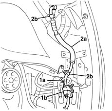
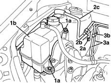
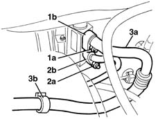
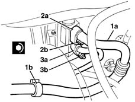
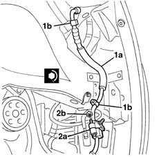

5040A57 evaporator inlet pipe - r r
- Path
- Procedures > 50 AUXILIARY UNITS > 5040 AIR CONDITIONING CASING AND COMPONENTS > 5040A air conditioner coolant circuit > 5040A57 evaporator inlet pipe - r r
- Kind
- repair procedure (removal / refitting; the operation number is the code)
- Applies to
- engines: 1.3 JTD; all production periods
- Interactive page
- https://sloeber94.github.io/elrnDB-lYpsln/en/#/2429310
Applies to: all engines; all production periods
Applies to: engines: 1.3 JTD; all production periods
 Removing
Removing
 Refitting
RefittingPlace the vehicle on a lift.
Drain the coolant ( 0010T84 coolant for air conditioning system dehydrate and recharge ).
1048A10 air cleaner filtering element - replace
7055B91 Right front WHEEL ARCH LINER - R.R.
5040B14 air conditioner system multi-level pressure switch - r+r
1. Undo the nut (1a) and disconnect the intermediate connector (1b) for the pipe between the condenser and the evaporator.
2. Disconnect the pipe (2a) from the retainers (2b).

Applies to: engines: 1.3 JTD; all production periods
1. Working on the right side of the engine compartment, undo the bolts (1a) and move the engine coolant expansion tank (1b) slightly.
2. Undo the bolt (2a) fixing the bracket (2b) for the evaporator inlet pipe (2c).
3. Release the fuel pipes (3a) from the retainers (3b).

Applies to: engines: 1.3 JTD; all production periods
5050B34 windscreen wiper arm/s complete with blade - r+r (right and left)
7210E22 R.R. WINDSCREEN BASE TRIM
1. Undo the nut (1a) and disconnect the connector (1b) from the expansion valve (1c) (disconnection necessary to be able to extract the connector (2b)).
2. Undo the nut (2a) and disconnect the connector (2b) from the expansion valve.
3. Remove the pipe (3a) from the condenser to the evaporator after having disconnected it from the retaining band (3b).

Applies to: engines: 1.3 JTD; all production periods
Refitting
RemovingCheck that the pipe is not damaged and that there are no cracks which would affect the seal.
1. Place the pipe (1a) in position and connect it to the retaining band (1b).
2. Connect the connector (2a) to the expansion valve and tighten the nut (2b) to the recommended torque.
 | Fastening | Component | Ø | Value (daNm) |
|---|---|---|---|---|
2b | Nut | COOLANT SYSTEM FITTINGS | M6 | 0.9 |
3. Connect the connector (3a) to the expansion valve and tighten the nut (3b) to the recommended torque.
| Fastening | Component | Ø | Value (daNm) |
|---|---|---|---|---|
2b | Nut | COOLANT SYSTEM FITTINGS | M6 | 0.9 |

Applies to: engines: 1.3 JTD; all production periods
7210E22 R.R. WINDSCREEN BASE TRIM
5050B34 windscreen wiper arm/s complete with blade - r+r (right and left)
Place the fuel pipes in position and secure them to the retainers.
Tighten the bolt fixing the bracket for the evaporator inlet pipe.
Place the engine coolant expansion tank in position and secure it using the bolts.
1. Connect the pipe (1a) to the retainers (1b).
2. Connect the connector (2a) for the evaporator inlet pipe, condenser side, and secure it tightening the nut (2b) to the recommended torque.
| Fastening | Component | Ø | Value (daNm) |
|---|---|---|---|---|
2b | Nut | COOLANT SYSTEM FITTINGS | M6 | 0.9 |

Applies to: engines: 1.3 JTD; all production periods
5040B14 air conditioner system multi-level pressure switch - r+r
7055B91 Right front WHEEL ARCH LINER - R.R.
1048A10 air cleaner filtering element - replace
Repressurize using coolant fluid ( 0010T84 coolant for air conditioning system dehydrate and recharge ).
Remove the vehicle from the lift.
Topics linked from this page (7)
- 0010T84 coolant for air conditioning system dehydrate and recharge
- 1048A10 air cleaner filtering element - replace
- 4450B04 right front wheel r r
- 5040B14 air conditioner system multi-level pressure switch - r+r
- 5050B34 windscreen wiper arm/s complete with blade - r+r
- 7055B91 Right front WHEEL ARCH LINER - R.R.
- 7210E22 R.R. WINDSCREEN BASE TRIM